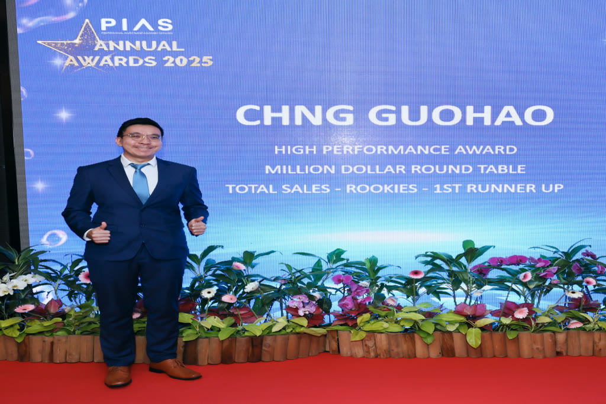
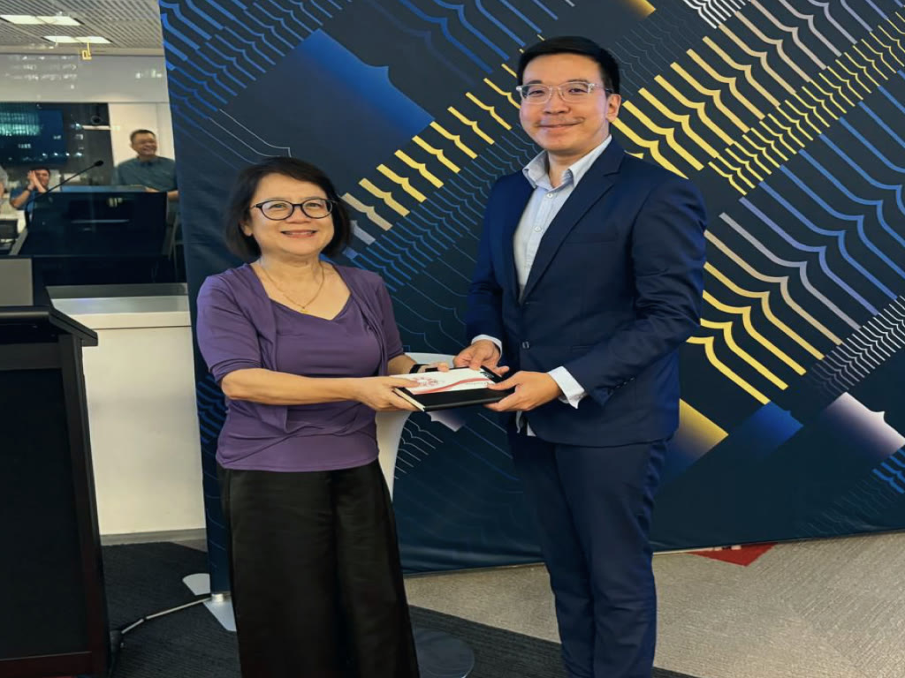

Diagnose Before Prescribe
Understanding your values, aspirations, concerns, family responsibilities, lifestyle expectations, financial resources, and the choices you want at future milestones.
Get to know Guo Hao’s approach to financial planning and how he helps clients build clarity, protection, and long-term results.
Understanding your values, aspirations, concerns, family responsibilities, lifestyle expectations, financial resources, and the choices you want at future milestones.
Mapping out your financial objectives across different life stages and identify the gaps that may affect your ability to achieve them.
Assessing available resources and develop customised strategies with appropriate risk-return considerations and optimised cost-benefits.
Curating and implementing suitable solutions progressively, allowing your financial strategy to develop alongside your priorities and circumstances.
Regularly reviewing your plan and make adjustments as your needs, priorities, financial environment, and life circumstances change.

Events & recognition
Guohao’s focus on making financial planning more accessible has led to him speaking to CPA Australia on retirement planning, sharing practical perspectives on preparing financially for life after work.
Guohao served as President of the BNI Singapore IZAQ Chapter, contributing to a professional business community built around relationships and business collaboration.
Guohao has served as a grassroots leader for over 10 years, allowing him to engage with people from different backgrounds and contribute to the community beyond his professional role.
Guohao was recognised among the Top 10 My Favourite Advisers and received the APFinSA Star Award 2025 at the 2025 Asia Pacific Financial Services Award.
Guohao was recognised with the TrFP® Awards by The Insurance and Financial Practitioners Association of Singapore (IFPAS) for demonstrating excellence in professionalism, ethics, and client-centric service.
Testimonials
“Your ability to explain complex financial concepts in a clear manner makes me well-informed of my financial decision. I appreciate your responsiveness, attention to details and customized financial strategies you developed for me.”
Chua Rui Fen
Management Trainee, MSD Singapore

Events & Recognition
With over 12 years in the industry, I’ve guided hundreds of families through their most important financial decisions. My passion for sharing knowledge, developing others, and contributing to the wider community has led me to become highly involved in the community.
A long-term partnership
Financial planning is not a journey you have to navigate alone. I offer guided planning, honest advice, and ongoing support to help you move through life’s milestones with confidence.
Understand your full financial picture, not just a single product.
Work through real decisions across protection, investing, and legacy planning.
Start your financial planning journey with approachable guidance, wherever you are today.
Grow alongside an adviser who reviews your plan as your life changes.
Let’s have a conversation to see how I can add value to you and your loved ones.